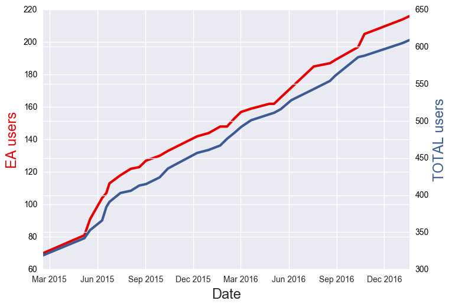
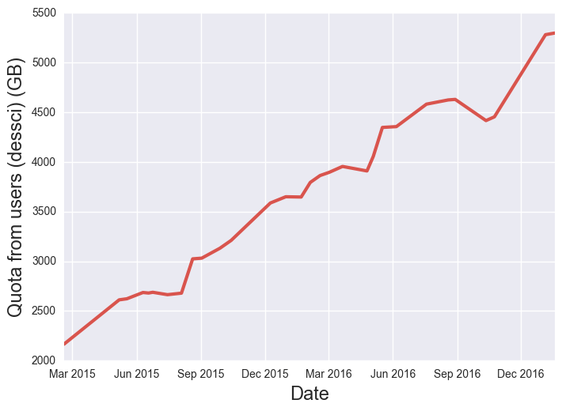

Data Access Tools and Data Releases
A brief description
Matias Carrasco Kind @ NCSA/UIUC
DES Meeting @ Cambridge, December 15th
Outline
Introduction

DES Survey: Gold (Data) Mine
DESDM: Excellent job at mining the data
DES: Consumer outside the mine
Need to bring gold (data) outside
Tools and interfaces
Y3A1 is out!
DESDM @ NCSA

Data Management and operations for DES and LSST
What do we do?
Process raw data nightly (Firstcut)
SN, transients, Alerts (SNPipeline)
Process and calibrate raw data (Finalcut)
Coadd Single Epoch images (MultiEpoch)
Serve data: Archive and catalogs (DB)
Other services: Confluence, EUPS, Interfaces, Tools, etc.
Many others...
DES Science Portal
desportal.cosmology.illinois.edu
-
@ NCSA but managed by LIneA
-
Interactive Coadd Image exploration
-
Moving some services from old-portal to the Science portal
-
Already with Y3A1 data
NOAO Data Lab
datalab.noao.edu
-
Also a VM @ NCSA but managed by NOAO
-
New initiave and release partner for DR1
-
Mutual benefits
-
Will keep data private until release
easyaccess

Motivations
-
DES DB in Oracle
-
Needed upgrade from older versions (trivialaccess)
-
Enhanced SQL command line interpreter
-
Astronomically friendly
-
Python API, web interface
-
There are many other clients but needed one standard for beginners
Some cool features
- History of commands
- Smart TAB auto-completion of commands, columns, users, tables and path
- Very flexible configuration
- Completely open source and written in python
- Write tables in csv, tab, fits and hdf5 formats
- Load sql queries directly from a file
- Load table directly in to DB in one step, no memory issues
- Can be imported as python module (py2/py3)
- Tables are handled and displayed using pandas
- Can run python functions inside query (beta)
- Many more...
Installation
Making things even easier
- Clone it from github
- Using pip or easy_install
- Using EUPS @ DESDM
- Pre-installed in Docker Image (and run outside the container)
- New! Install with conda
conda install easyaccess -c mgckind
Future and Demo
-
Generalization (SQLAlchemy), in-query python functions, batch jobs, checkpoint, web, better Jupyter integration, more...
-
easyacess: Enhanced SQL interpreter for astronomical surveys (Carrasco Kind+, 2016?)
-
For a more detailed tutorial check Here
Some DESDM statistics
(Scroll down )
DESDM New accounts

More than 250 New users since new On-boarding!
New DES Member? Check Here
Several Services: DB, Confluence, HipChat, BitBucket, Stackoverflow
DB Users

Triple the number of users since easyaccess
Almost 200 ea users with different activity levels
Feedback via github issues, stack-overflow-like questions, email list and personal inquiries
DB Quotas

Personal space actively used and constantly increasing
People create and share tables with one command
~ 4.5 TB in personal space, tables and index tables included
Experimental UI projects being developed (Openstack + Docker)

deslabs.ncsa.illinois.edu
JupyterHub + easyaccess + JS9

- Multi-user jupyter notebook sessions
- Access with DB credentials
- Running in OpenStack ("The Cloud")
- Easy setup (Running from Docker container)
- Easyaccess and other tools installed
- Spark Cluster in alpha stage
- Local JS9 (Next gen. DS9) integration
- Still in beta mode, planning to scale up
- Open to DES collaborators
Github Org
https://github.com/DarkEnergySurvey

Ask me for invite!
Online Cutout Services
descut.cosmology.illinois.edu
-
Cutout Services for both: Coadd images and Single Epoch
-
Nice REST API so can be also accessed from e.g. python
-
Almost production-like services with GPFS mounted
Live demo!
Data Release 1
-
A release is not only data! but interfaces, software, archive, documentation, support and commitment
-
Each component is not a single unit, e.g. Documentation is not only a paper relase but also tutorials, data model, DB, software, etc...
-
Content, validation and vetting done with collaboration
-
Many factors/people involved, long term plan
-
Internal and public release, DES DR1 December 15th, 2017
Conclusions
-
Tools being developed to make data access easier @ LIneA, NOAO and DESDM
-
Easyaccess, Cutouts, Jupyter, Js9, Science Portal, etc...
-
Opensource and integrated software
-
Bring software to the data!
-
Want to help? Want some infrastructure? Let me know!
deslabs.ncsa.illinois.edu
Thanks!
Questions?
Matias Carrasco Kind
mcarras2@illinois.edu